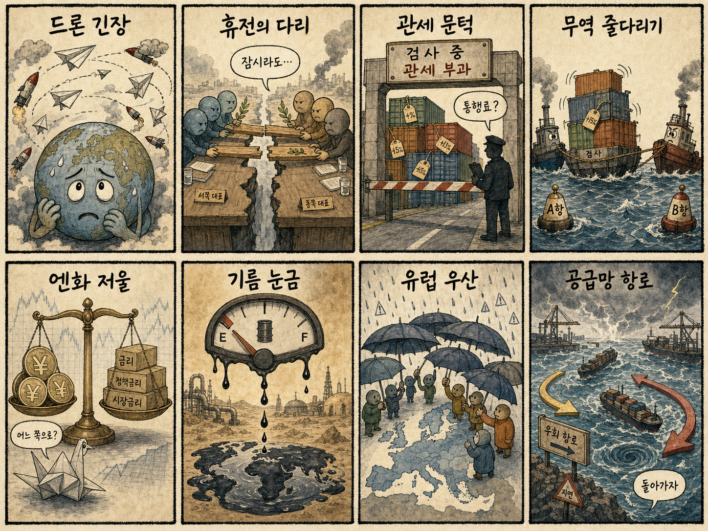
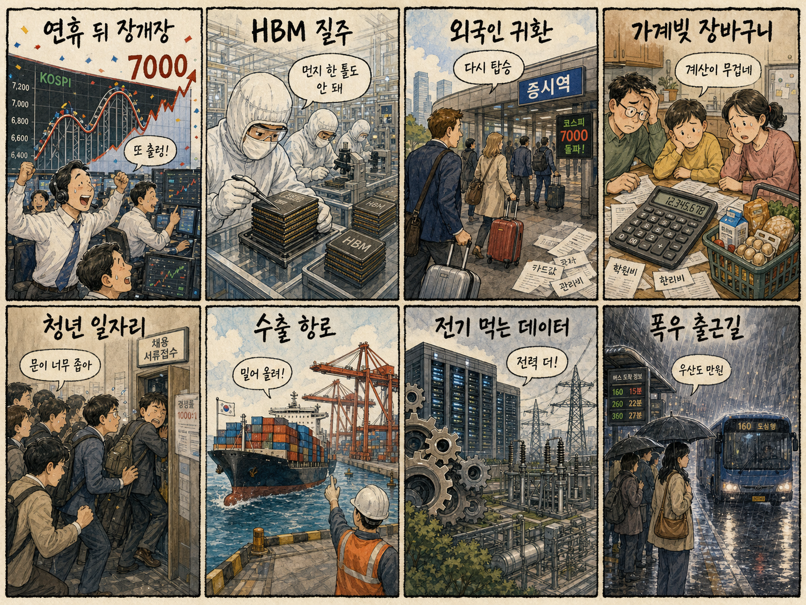

01
어플라이드 머티리얼즈 · 518.49→535.31달러 · +3.24%
내용요약 하락장에서도 시가 대비 3.24% 올라 반도체 장비주의 상대강세가 두드러졌습니다.
예상여파 국내 장비주 심리에 우호적이지만 수주·실적과 시초가 갭을 확인하지 않은 추격은 피해야 합니다.
MORNING_BRIEFING_20260818
작성 시각: 2026-08-18 06:38 KST · 직전 미국 정규장과 2026-08-18 KST 당일 공개 기사 기준
8월 17일 미국 정규장은 중동 긴장으로 유가와 장기 국채금리가 함께 오르며 하락했습니다. 다우 -0.51%, S&P 500 -0.52%, 나스닥 -0.32%였습니다. 메모리 관련주의 상대강세는 국내 반도체에 완충 요인이지만, KOSPI는 직전 거래일까지 5일 연속 오른 뒤 장중 7,000선을 찍은 상태라 오늘은 시초가 추격보다 외국인 현·선물 수급과 유가 민감 업종의 반응을 먼저 봐야 합니다.
| 지수 | 종가 | 등락률 | 한국 증시 영향 |
|---|---|---|---|
| 다우존스 | 53,459.78 | -0.51% | 경기민감주 부담 |
| S&P 500 | 7,745.06 | -0.52% | 금리·유가 경계 |
| 나스닥 종합 | 26,644.91 | -0.32% | 기술주 약세, 메모리 차별화 |
유가와 30년물 금리 상승이 위험선호를 눌렀습니다.
미·이란 협상 교착이 물가와 원가 부담을 키웠습니다.
연휴 뒤 7,000선 매물과 외국인 수급을 확인합니다.
검증 문턱과 손익비를 모두 통과한 후보가 없습니다.
8월 17일 보고서는 대체공휴일 휴장과 수급·컨센서스·보정 표본·손익비 문턱을 동시에 검증하지 못해 공식 추천을 내지 않았습니다. 게시 당시 판단은 그대로 유지됩니다.
| 시장 | 종가 | 등락률 | 해석 |
|---|---|---|---|
| KOSPI | 6,977.94 | +2.42% | 14일 종가·장중 7,000 돌파 |
| KOSDAQ | 864.65 | +0.38% | 대형주 대비 제한 상승 |
| 다우존스 | 53,459.78 | -0.51% | 유가·금리 부담 |
| S&P 500 | 7,745.06 | -0.52% | 위험선호 둔화 |
| 나스닥 | 26,644.91 | -0.32% | 기술주 약세 |
어플라이드 머티리얼즈는 정규장 시가 대비 +3.24%였습니다.
뉴욕장 메모리주 상대강세가 국내 대형 반도체의 완충 요인입니다.
메타 -3.52%, 마이크로소프트 -2.01%로 시가 대비 약세였습니다.
브렌트유 90달러대는 원료·운송비 민감 업종에 불리합니다.
내용요약 하락장에서도 시가 대비 3.24% 올라 반도체 장비주의 상대강세가 두드러졌습니다.
예상여파 국내 장비주 심리에 우호적이지만 수주·실적과 시초가 갭을 확인하지 않은 추격은 피해야 합니다.
내용요약 유가와 장기금리 상승으로 성장주 할인율 부담이 커지며 시가 대비 3.52% 하락했습니다.
예상여파 국내 인터넷·AI 소프트웨어의 밸류에이션 부담과 외국인 수급 변동성을 높일 수 있습니다.
내용요약 AI 서버주가 시가 대비 2.62% 밀리며 데이터센터 하드웨어 안에서도 차별화가 나타났습니다.
예상여파 국내 서버·냉각 테마는 단순 AI 투자 확대보다 고객·마진과 주문 가시성을 따져야 합니다.
내용요약 대형 기술주 전반의 매도 속에 시가 대비 2.01% 하락했습니다.
예상여파 생성형 AI 투자 지출과 수익화 속도에 대한 시장의 눈높이가 국내 소프트웨어 심리에도 영향을 줄 수 있습니다.
내용요약 금리 상승과 소매 실적 관망 속에 시가 대비 1.56% 하락했습니다.
예상여파 클라우드 성장 기대는 유지되지만 소비·물류 비용과 금리 민감도가 단기 부담입니다.
연휴 뒤 첫 거래일의 핵심은 미국 지수의 0.3~0.5% 하락보다 유가 90달러대와 KOSPI 7,000선의 자체 매물입니다. 미국 반도체 장비주의 상대강세와 국내 메모리 호황 전망은 대형 반도체에 완충 요인이지만, 직전 거래일까지 삼성전자와 SK하이닉스가 연속 상승한 만큼 시초가 갭을 추격하기보다 외국인 현·선물 동반 매수와 오전 저점 유지 여부를 확인해야 합니다. 항공·화학·운송은 원가 부담, 정유·일부 에너지는 제품 마진과 정책 기대를 분리해 봐야 합니다.
오늘은 추천 없음 — 현금 관망
연휴 뒤 갭 변동성과 유가·장기금리 상승 국면에서 전일까지의 외국인·기관 수급, 컨센서스 변화, 30건 이상 유사 조건 확률 보정, 예상 손익비 1.5 이상을 동시에 검증해 종합점수 75점·상승확률 60% 문턱을 넘긴 후보가 없습니다. 숫자를 임의로 채우지 않습니다.
관심 연결종목 메모리·HBM, 반도체 장비, 데이터센터 전력은 관찰 대상일 뿐 매수 추천이 아닙니다. 장전 급등 또는 과도한 시초가 갭에서는 추격매수 금지입니다.
연휴 뒤 시초가 갭과 외국인 현·선물 수급을 봅니다.
항공·화학 원가와 정유 마진의 엇갈린 반응을 점검합니다.
소비 둔화 여부와 장기금리 반응을 살핍니다.
복구, 교통과 전력 수요를 함께 확인합니다.
핵심 요약: AI 인프라 경쟁은 반도체를 넘어 전력·부지·냉각과 유휴 기기 활용까지 넓어지고 있습니다. 메모리 업황의 수혜 범위가 범용 D램으로 확장되는 가운데 피지컬 AI 조직 신설과 모델 증류의 라이선스 문제는 기술 내재화와 거버넌스를 동시에 요구합니다.
내용요약 사용하지 않는 스마트폰의 연산 자원을 묶어 소형 분산 데이터센터처럼 활용하는 아이디어를 다룬 기사입니다.
예상여파 유휴 기기 재활용은 비용과 전자폐기물을 줄일 수 있지만 보안, 발열, 전력 효율과 운영 안정성이 상용화의 관건입니다.
내용요약 엔비디아가 미국 오하이오에서 대규모 데이터센터 전력·부지 인프라를 확보했다는 소식입니다.
예상여파 AI 연산 투자가 칩 판매에서 전력·부지 선점으로 넓어지며 전력망, 냉각, 변압기 공급망의 병목이 장기화할 수 있습니다.
내용요약 AI 서버 구성에서 고가 HBM의 사용량을 최적화하면서 범용 D램 수익성이 함께 개선되는 흐름을 짚은 기사입니다.
예상여파 메모리 호황의 범위가 HBM에서 범용 제품으로 넓어질 수 있으나 가격 상승의 지속성과 고객 재고를 함께 확인해야 합니다.
내용요약 삼성이 휴머노이드의 제어와 조작 기술을 내재화하기 위한 피지컬 AI 전담 조직을 가동했다는 보도입니다.
예상여파 로봇 경쟁이 하드웨어 조립에서 학습 데이터와 제어 소프트웨어로 이동해 센서·구동계·시뮬레이션 생태계 투자가 늘 수 있습니다.
내용요약 국가대표 AI 모델의 증류 과정이 해외 모델 약관이나 지식재산 규정과 충돌할 가능성을 제기한 기사입니다.
예상여파 공공 AI 사업은 성능 경쟁과 함께 학습 데이터 출처, 모델 라이선스, 대미 협의 등 법적 정합성을 선제적으로 관리해야 합니다.
핵심 요약: 미·이란 협상 교착과 중동 드론 긴장으로 유가가 90달러대로 오르며 뉴욕증시와 장기금리를 압박했습니다. 가자 평화 협상은 큰 진전이 없었고, 관세 정책의 불확실성은 기업 공급망의 상시 리스크로 남았습니다.
내용요약 이란이 이라크 쿠르디스탄의 주요 시설을 겨냥한 드론 공격을 했다는 의혹을 다룬 국제 보도입니다.
예상여파 중동의 군사 긴장이 확대되면 원유 공급과 항공·해상 물류의 위험 프리미엄이 더 높아질 수 있습니다.
내용요약 가자지구 평화 로드맵을 논의하기 위해 미국 측 특사가 이스라엘 총리와 만났지만 뚜렷한 진전이 없었다는 소식입니다.
예상여파 휴전 협상이 지연되면 인도주의 위기와 중동 지역의 안보·에너지 불확실성이 이어질 가능성이 큽니다.
내용요약 미국과 이란의 협상이 교착되면서 브렌트유가 다시 배럴당 90달러대로 올라섰다는 보도입니다.
예상여파 유가 상승은 물가와 장기금리를 자극해 항공·화학·운송 원가와 중앙은행의 완화 기대에 부담을 줄 수 있습니다.
내용요약 중동 긴장, 유가 상승과 국채금리 부담으로 S&P 500이 0.5%가량 하락한 17일 뉴욕증시 마감 기사입니다.
예상여파 한국 증시에는 성장주 할인율 부담과 원유 수입 비용 우려가 번질 수 있으나 메모리주의 상대강세는 완충 요인입니다.
내용요약 미국 관세 정책의 반복적인 변화가 기업의 투자와 공급망 의사결정에 미치는 영향을 짚은 칼럼입니다.
예상여파 수출 기업은 단일 관세율 전망보다 생산지 다변화, 원산지 규정과 사후 대응 체계를 상시 점검할 필요가 있습니다.

핵심 요약: 연휴 뒤 KOSPI는 7,000선의 수급 시험을 앞뒀고 반도체 호황은 성장률 전망을 끌어올리고 있습니다. 반면 대기업 청년 채용 감소와 데이터센터의 물·전력 부담, 남부 비와 전국 무더위는 체감경제와 생활 안전의 과제입니다.
내용요약 최근 변동성이 완화된 KOSPI의 추세와 시장 베테랑들의 업종별 전략을 다룬 개장 전 기사입니다.
예상여파 지수 고점권에서는 시초가 갭보다 외국인 현·선물 수급과 반도체 이익 전망의 지속성을 확인하는 접근이 중요합니다.
내용요약 대기업 신규 채용이 2년 사이 15% 줄고 청년 채용 비중은 낮아진 반면 장년 채용은 늘었다는 조사입니다.
예상여파 청년의 노동시장 진입 지연은 소비와 주거 독립을 늦출 수 있어 신입 직무 재설계와 현장형 교육 수요가 커질 전망입니다.
내용요약 반도체 호황을 근거로 국제 신용평가사가 한국 성장률 전망을 상향했다는 보도입니다.
예상여파 수출과 기업이익에는 우호적이지만 메모리 가격과 설비투자 사이클에 대한 의존도가 커지는 점은 함께 관리해야 합니다.
내용요약 데이터센터 확대로 물과 전력망 부담이 지역사회에 전가될 가능성을 해외 사례와 함께 짚은 기사입니다.
예상여파 국내 AI 인프라 확대는 주민 수용성, 전력망 비용 배분, 냉각수와 재생에너지 조달을 포함한 입지 기준을 요구합니다.
내용요약 남부지방의 폭우 고비가 지나가지만 곳곳에 비가 남고 낮 최고 33도의 무더위가 이어진다는 예보입니다.
예상여파 침수 복구와 교통 안전을 챙기는 동시에 전력 수요와 온열질환 위험에 대비해야 합니다.
